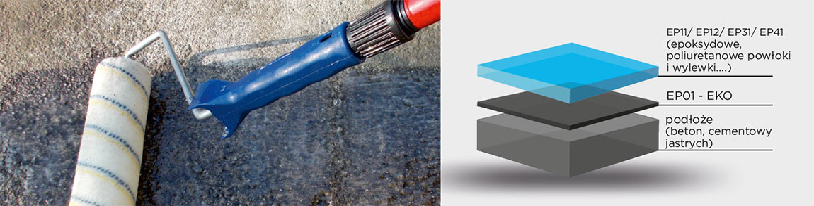
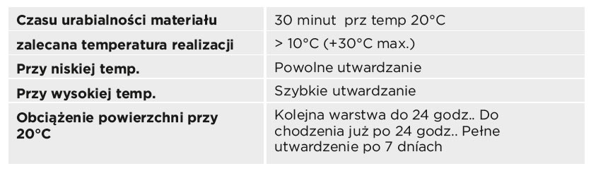
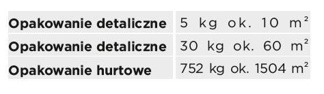
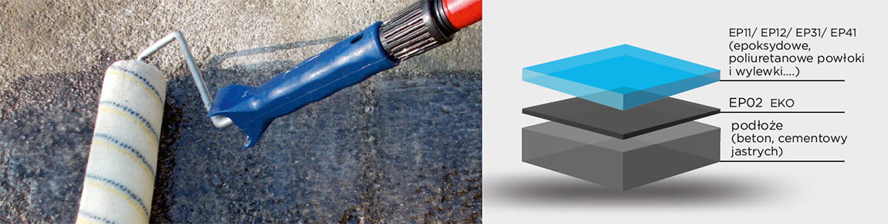
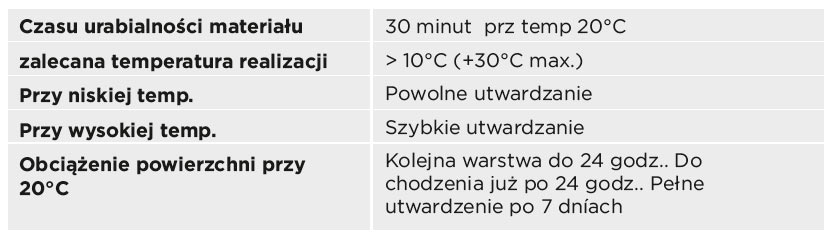
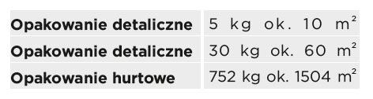

Gruntująca, wiążąca warstwa zapewniająca idealną przyczepność warstw wierzchnich TopStone do podłoży
- gruntowanie betonów o wilgotności do 4%
- gruntowanie suchych samopoziomujących wylewek betonowych
- wzmocnienie podłoża
- tworzenie powłok zapobiegających pyleniu betonu
- po wymieszaniu TopThix możliwość wypełniania drobnych ubytków, zamykania porów, itp.
- wypełnianie szczelin (zszywanie)
- wykonywanie wyobleń, faset na styku podloga/ściana
- zamykanie, uszczelnianie porów podłoży (beton..)
- níska cena, ekonomiczne rozwiązanie
- proste w aplikacji
- bardzo dobre właściwości mechaniczne
- dobra właściwości gruntujące
- uniwersalny materiał do wielu zastosowań
- wysoka przyczepność
- epoksydowy, dwuskładnikowy, o niskiej lepkości, bez rozpuszczalnikowy i bez nonylfenolu

Podane zużycia materiałów mogą się różnić w zależności od konkretnych warunków i konkretnego zastosowania.

W temp > +12°C < +25°C , w suchym pomieszczeniach , w oryginalnych opakowaniach. Okres gwarancji - na opakowaniu.
1. Przygotowanie podłoża–usunąć zabrudzenia, niezwiązanych cząstki, zmatowić powierzchnie, jeżeli trzeba usunąć mleczko cementowe to powierzchnię przeszlifować, sfrezować, piaskować, pozbawić tłuszczów i innych chemikalii które mogą działąś jako separator
2. Przygotowanie narzędzi: pojemnik do wymieszania składników, mieszadło, wałek do malowania (welurowy, nylonowy z krótkim włosem), pędzel, gumowa paca, paca metalowa.
3. Dokładnie wymieszać oba składniki: A i B TopStone EP01-EKO za pomocą wolnoobrotowego mieszadła w czasie ok. 3 minut.
4. Tak przygotowany materiał zużyć do 30 minut przy 20°C wg własciwej technologii, np. nałożenie wałkiem, pędzlem,gumową pacą lub natryskiem AIRLESS.
5. Dla zwiększenia przyczepności warstwy jest możliwe świeżą i nieutwardzoną powierzchnię TopStone EP01-EKO posypać suchym i czystym piaskiem kwarcowym o frakcji 0,3-0,5 mm (zużycie ok. 0,5-4,0 kg/m ), lub wprost do wymieszanej masy dodać piasek kwarcowy i aplikować Ep01 -EKO pacą metalową.
6. TopStone EP01-EKO aplikować przy zmniejszającej się temp, aby niepowstawały pory parującym powietrzu z podłoża. W przypadku konieczności można aplikować więcej warstw EOP01 EKO.
Instrukcja wykonania masy wypełniającej tzw.„kitu“: wymieszać już przygotowany TopStone EP01-EKO z suchym i czystym piaskiem kwarcowym o frakcji 0,3-0,5mm w stosunku 1:0,5. Aplikacja pacą metalową. Zastosowanie: wyrównywanie mniejszych nierówności podłoża o grubości ok. 1-3 mm s maksymalnym spadkiem 1%
Instrukcja wykonania masy do uzupełniania ubytków i wykruszeń : wymieszać już przygotowany TopStone EP01-EKO z TopThix w proporcji ok. od 10 do 15:1. Aplikacja metalową paca lub szpachelką. Nadaje się do uzupełniania ubytków na powierzchniach pionowych Zastosowanie: uzupełnianie pęknięć, szczelin, drobnych ubytków, uzupełnianie spoin, wyrównywanie pionowych powierchni , wykonywanie wyobleń , klejenie
TopStone EP01-EKO można wykorzystywać do podlewek, kotwienia, klejenia, injekcji, wykonywania powłok niepylących w systemach podłóg pływających
TopStone EP01-EKO zaraz po wymieszaniu aplikujemy. Jeśli tego nie dopełnimy, przy następnym wymieszaniu np. 5-10 min. może nastąpić gwałtowna reakcja egzotermiczna (bardzo szybkie utwardzenie z wydzieleniem ciepła). Narzędzia oraz skórę w przypaku zabrudzenia nieutwardzoną masą czyścimy TopStone Cleanerem lub acetonem.

Gruntująca, wiążąca warstwa zapewniająca idealną przyczepność warstw wierzchnich TopStone do podłoży
- gruntowanie na wilgotne i mokré betony, gruntowanie na suché betony
- gruntowanie samopoziomujących wylewek betonowych.
- gruntowanie cementowých jastrychów, anhydrytu
- warstwa wiążąca pomiedzy starym i nowym betonem
- powłoka zmniejszająca pylenie w systemach podłóg pływających
- po wymieszaniu TopThix możliwość wypełniania drobnych ubytków, zamykania porów, itp.
- wypełnianie szczelin (zszywanie)
- wykonywanie wyobleń, faset na styku podloga/ściana
- aplikacja na betony i inne podłoża bez konieczności mierzenia wilgotności
- uszczelnienie porów podłożu (beton)
- aplikacja na świeży beton już piąty dzień po betonowaniu
- niska cena, ekonomiczne rozwiązanie
- dwukrotnie większa wytrzymałość w pierwszych 48 godzinach w porównaniu do innych gruntów, na wilgotne betony.
- prosta aplikacja, wysokie właściwości mechaniczne, bardzo dobre właściwości gruntujące
- wysoka przyczepność
- epoksydowy, bezbarwny, dwuskładnikowy, o niskiej lepkości, bez rozpuszczalnikowy i bez nonylfenolu

Podane zużycia materiałów mogą się różnic w zależności od konkretnych warunków i konkretnego zastosowania.

1. Przygotowanie podłoża–usunąć zabrudzenia, niezwiązanych cząstki, zmatowić powierzchnie, jeżeli trzeba usunąć mleczko cementowe to powierzchnię przeszlifować, sfrezować, piaskować, pozbawić tłuszczów i innych substancji chemicznych które mogą działać jako separator
2. Przygotowanie narzędzi: pojemnik do wymieszania składników, mieszadło, wałek do malowania (welurowy, nylonowy z krótkim włosem), pędzel, gumowa paca, paca metalowa.
3. Dokładnie wymieszać oba składniki: A i B TopStone EP02-EKO za pomocą wolnoobrotowego mieszadła w czasie ok. 3 minut.
4. Tak przygotowany materiał zużyć do 30 minut przy 20°C wg właściwej technologii, np. nałożenie wałkiem, pędzlem,gumową pacą lub natryskiem AIRLESS.
5. Dla zwiększenia przyczepności warstwy jest możliwe świeżą i nieutwardzoną powierzchnię TopStone EP02-EKO posypać suchym i czystym piaskiem kwarcowym o frakcji 0,3-0,5 mm (zużycie ok. 0,5-4,0 kg/m ), lub wprost do wymieszanej masy dodać piasek kwarcowy i aplikować Ep02 -EKO pacą metalową.
6. TopStone EP02-EKO aplikować przy zmniejszającej się temp, aby niepowstawały pory parującym powietrzu z podłoża.
W przypadku konieczności można aplikować więcej warstw EP02 EKO.
Instrukcja wykonania masy wypełniającej tzw.„kitu“: wymieszać już przygotowany TopStone EP02-EKO z suchym i czystym piaskiem kwarcowym o frakcji 0,3-0,5mm w stosunku 1:0,5. Aplikacja pacą metalową. Zastosowanie: wyrównywanie mniejszych nierówności podłoża o grubości ok. 1-3 mm s maksymalnym spadkiem 1%
Instrukcja wykonania masy do uzupełniania ubytków i wykruszeń : wymieszać już przygotowany TopStone EP02-EKO z TopThix w proporcji ok. od 10 do 15:1. Aplikacja metalową paca lub szpachelką. Nadaje się do uzupełniania ubytków na powierzchniach pionowych. Zastosowanie: uzupełnianie pęknięć, szczelin, drobnych ubytków, uzupełnianie spoin, wyrównywanie pionowych powierchni , wykonywanie wyobleń , klejenie TopStone EP02-EKO można wykorzystywać do podlewek, kotwienia, klejenia, injekcji, wykonywania powłokniepylących w systemach podłóg pływających
TopStone Ep02EKO zaraz po wymieszaniu aplikujemy. Jeśli tego nie dopełnimy, przy następnym wymieszaniu np. 5-10 min. może nastąpić gwałtowna reakcja egzotermiczna (bardzo szybkie utwardzenie z wydzieleniem ciepła). Narzędzia oraz skórę w przypaku zabrudzenia nieutwardzoną masą czyścimy TopStone Cleanerem lub acetonem.